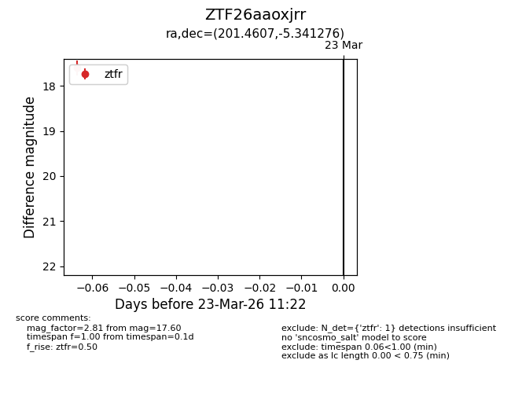
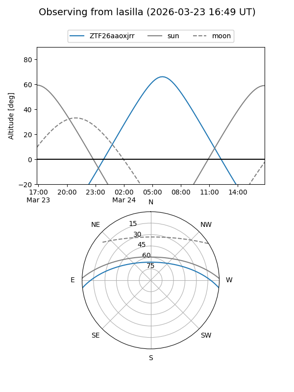
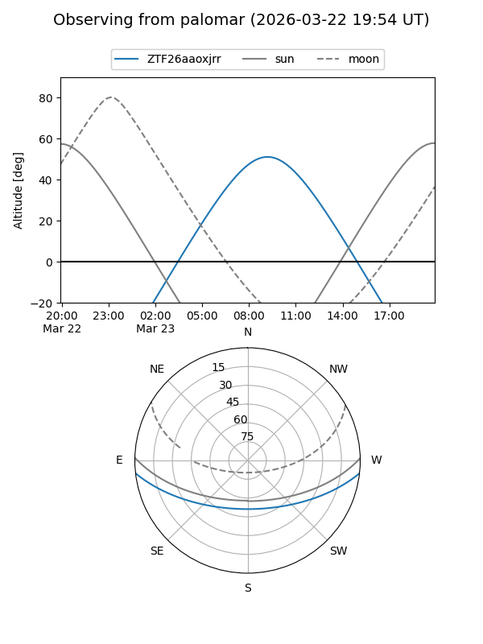

ZTF26aaoxjrr
Target ZTF26aaoxjrr at 2026-03-23 11:24
Aliases and brokers:
FINK: link
Lasair: link
ALeRCE: link
alt names
ZTF26aaoxjrr (ztf,fink_ztf)
Coordinates:
equatorial (ra, dec) = 201.4607,-5.34128
equatorial (HMS+DMS) = 13:25:50.58,-05:20:28.59
galactic (l, b) = (318.5761,+56.48185)
Flags:
Photometry:
last ztfr=17.60
1 ztfr detections
Lightcurve

Visibility


Additional plots